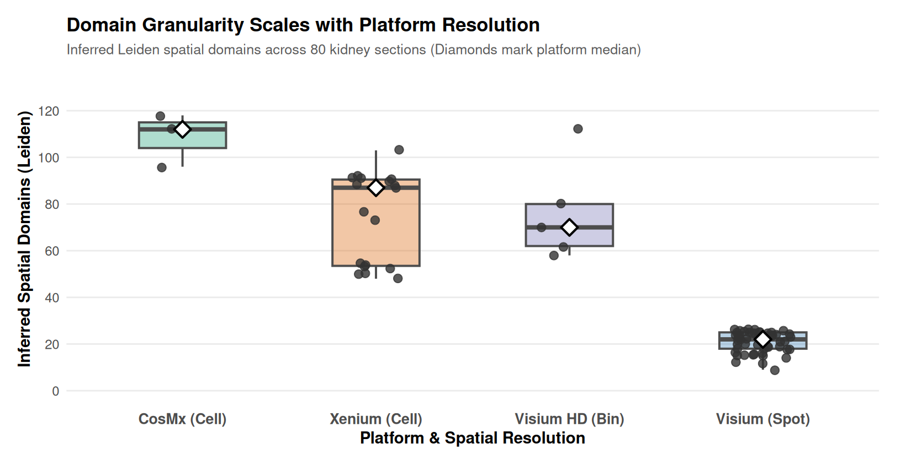
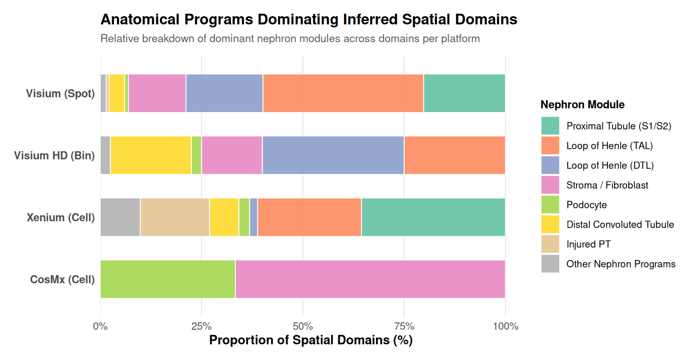

Chapter 6. The Architecture of the Kidney
Johnson
2026-08-15
The previous three chapters read the kidney cell by cell, spot by spot, region by region. This chapter asks the organizing question: does the tissue itself partition into coherent anatomical units, and do computational methods find the same partition that anatomy describes? This is spatial-domain inference: clustering the units of a sample by their expression and their physical proximity, so that the resulting domains correspond to actual tissue architecture.
Across the 80 samples with coordinates, I computed spatial domains with two independent approaches: Leiden clustering on the expression-and-proximity graph (an unsupervised baseline), and Novae, a graph-based foundation model pretrained on ~30 million cells across many tissues, applied zero-shot on the GPU. Every domain was then labeled by its dominant nephron module, producing an anatomy-alignment ledger.
The cortex-to-medulla axis, recovered


Across the single-cell and spot sections, the domains align with nephron architecture. On Visium cortex sections, domains resolve into loop-of-Henle- and stroma-dominant territories; on whole-kidney Xenium sections, proximal-tubule (S1/S2, S3) and loop-of-Henle domains organize the section along the expected axis; on Visium HD, distal-tubule, loop-of-Henle, and collecting-duct domains emerge at bin resolution; on fetal CosMx kidneys, podocyte- and stroma-dominated domains are the most prominent. In other words, the anatomy that the textbooks describe is what the domains find.


The same domain inference applied at bin and cell resolution across the cohort:


Two methods, two views, near-zero agreement
The most important number in this chapter is not a domain map but the agreement between the two methods:
The median adjusted Rand index between Leiden and Novae domains is ≈ 0.03. They partition the same tissue into domains that barely agree. The disagreement is information, not a bug. Leiden partitions what the measured genes say; Novae partitions what a pretrained representation of cell state says. Both are biologically coherent (both align to nephron anatomy); they are simply different views, and a domain analysis that reports only one view is hiding the other.
The two methods sit at opposite ends of the representation spectrum, which is the point of running them together: Leiden sees only the genes measured in that sample, Novae sees a pretrained representation of cell state, and neither is the true partition. The domain labeling, by dominant marker module, is the shared language that lets me check both against anatomy.
What this chapter found
GraphST (the PyPI package) fails on full kidney sections with an internal numerical error. I recorded it, used the methods that work, and say so rather than quietly dropping it. The failure mode is a boolean ambiguity on one of its internal arrays, and it never completed any of the eighty sections; I treat that as a property of the tool, not of the data. Novae has its own floor: below about six hundred units it sits under the model’s minimum, so two very small Visium sections fall outside its scope, recorded as such.
Foundation-model and expression domains disagree (ARI ≈ 0.03). Any claim of “the” spatial domains of a tissue is representation-dependent; the framework reports the agreement so that one knows which view is being reported.
Domain granularity tracks platform resolution. Visium sections yield ~15–50 domains, Visium HD more, single-cell sections more still. A domain on a spot platform is a coarser object than a domain on a cell platform, and they are not directly comparable.
What this chapter establishes is that the kidney’s architecture is recoverable from its own expression and geometry by multiple independent methods, aligned to known anatomy, and that the methods’ disagreement is itself a finding rather than a failure. With the organ’s organization in hand, this analysis turns to what happens when it is perturbed.